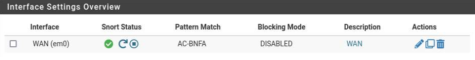

Showcase Home
This page is to showcase all of my professional and hobbyist projects. Thank you for visiting!

I am a computer science graduate from the University of North Carolina at Charlotte. I currently hold a position as a tier 2 desktop support technician here in Charlotte. I am Security+ & A+ certified. I have three years of hands-on experience to validate these certifications in the form of several IT projects. A few notable examples include my current role where I am solely responsible for preparing and providing hardware for all salespeople within a Fortune 500 company in addition to my desktop support role. In the past, I held a position maintaining hardware for 28 Credit Union locations spanning Eastern NC.
My next goal is to hold a position as a system administrator or possibly as a security analyst. My eventual aim is to pursue a career as a security engineer or SOAR engineer.
To pursue this goal further, I plan on pursuing the CompTIA CySA+ in the near future and a Masters in Cybersecurity down the road.
AutoHotKey
I have automated several processes using AutoHotKey, a free and open-source scripting language that allows for macro creation.
If you would like to install AutoHotKey, please follow this link to the Microsoft Store.
Most of my AHK scripts utilize screen coordinates, nested loops, and the clipboard. I implemented a universal suspend, pause, and unpause hotkey for each application.
This way, I stop the script at any point, provide assistance and the script will pick up where it left off.
For processes that take some time, the macro is set to lock the PC on exit.
A few examples and demonstrations can be seen below:
AHK-Pull data - Searches provided serial numbers and copies data from an internal system. This tool allows me to update necessary information for the entire team.
I tried to web scrape using curl, but authentication is blocked, so this is the next best solution.
Feel free to download this script here
AHK- Tech sign-off - The technician sign-off process essentially adds and confirms a new serial number for end-of-lease assets. This process must be completed manually and the
data is provided to our team piecemeal over time. This tool allows me to update, correct, and ensure the accuracy of every refresh record our department has worked on from the end of 2022 to today.
At the time of writing (4/1/24), this is 6,620 records over 15 months.
The script recognizes which technician was responsible for the record and selects the appropriate technician from the dropdown based on this.
All incomplete records have been documented to visit in the future when our vendor provides more information.
I plan to continue this project indefinitely for each techinical as data becomes available each week.
Feel free to download this script here
AHK- UPS label creation - This script automates the creation of UPS labels through an internal application.
I created a version that waits on user confirmation before generating labels, but I deemed it unnecessary as the script has not generated any incorrect labels yet.
Feel free to download this script here
Asset Checker
The existing process our team used to check the return status of an asset was extensive and time-consuming.
Technicians would query two separate workbooks and search our vendor's website manually for each serial number.
This process could take quite some time depending on how many assets were being queried.
I created an online spreadsheet that pulls in data from both workbooks and checks this data against the provided values.
A technician could theoretically paste in hundreds of serial numbers and be provided with an instant confirmation of return.
Additionally, there is a concatenated hyperlink generated for each serial number for easy searching of our vendor's database.

Unfortunately, the queried workbooks are internal and cannot be shared publicly.
I created a template of this tool that is available for download here.
Knowledge Base
When I started, my department did not have any formal online libraries for new employees or troubleshooting.
I created an online OneNote knowledge base that is accessible and editable by all team members.
I have worked with my peers to add their personal notes to the knowledge base.
The document includes uncommon troubleshooting solutions (cases) and documentation for each role within our department.
Unfortunately, there are techniques and operations specific to the corporate environment within my documentation, so I can only provide a screenshot.

Door Data
My team lead was discussing the possibility of letting some technicians work from home, but they were unsure about which days were busiest for corporate pickups and drop-offs.
I took it upon myself to process the data that was available in the form of drop-off and pickup confirmation emails.
To do so, I pulled the data from Outlook, compiled, and formatted it, and then created statistics based on each day of the week.

While the content is likely irrelevant outside of the office, you may find the formulas for managing dates and comparing lists useful.
Mail Merge
Mail merge is a useful Microsoft Office feature that allows you to pull data from Excel into Word to send emails through Outlook.
The team I am on is responsible for sending on average 90 emails a week outside of support or requests. The data in these emails is available within an Excel workbook,
so to save time, I automated the process using Mail Merge.
After the success I had using mail merge, I decided to write a guide and aid my coworkers to automate their emails.
If you would like to download the guide, it is available here
If you would like to download the sample Excel sheet, it is available here
Sales
After three months in my technician role, I was trusted with the responsibility of supporting all salespeople within the company. A majority of this responsibility entails
providing and receiving sales assets. Over the next month, I revolutionized and standardized this process.
Process:
--------
When a request for a new user is received, I provision a machine by creating an 'Outgoing card' to ensure all necessary steps are followed.
When a machine is received from a retiring salesperson or unit closure, the asset is labeled with an 'Incoming Card' to ensure all necessary steps are followed.
All sales assets are documented on an inventory sheet I manage.

If you would download either process management cards, please select the links below:
Sales incoming cards |
Sales outgoing cards
PowerShell
I utilize PowerShell to help automate some processes that benefit both my team and I.
All downloadable scripts are saved as text files. Please see a few examples below:
Last login - Used to determine the last time that a user authenticated to the domain.
Feel free to download this script here
Email validator - Takes in a list of user emails and isolates those that are not associated with an object in AD.
Feel free to download this script here
Both of these scripts above were shared with me. Thanks to my mentor, Jake!
My Scripts:
Check for process - Used to check if a specified process is running on a computer. This can be used on the local device or on any remote domain computer.Feel free to download this script here.
Check for service - Used to check if a specified service is running on a computer. This can be used on the local device or on any remote domain computer.
Feel free to download this script here.
Pull Env data from machine to txt - Used to pull environment data from a local or remote specified machine. Data is written to a text file.
Feel free to download this script here.
Pull Emails based on name - Takes in a list of space separated first and last names and writes a list of UserPrincipalNames (email address') if the name is recognized in AD.
Feel free to download this script here.
Pull User Data Exp to CSV - Takes in a list of user emails and writes requested information to a csv file.
Feel free to download this script here.
Pull Single User Data - Used to pull account information from a specific user.
Feel free to download this script here.
Search All Users in CC - Pulls all users within a specified cost center. This script can be quickly adapted to search for all users within any specified property such as a department or location.
Feel free to download this script here.
Search by CC - Pulls the cost center from a list of user emails. his script can be quickly adapted to search for any specified property as long as you have the user's email address.
Feel free to download this script here.
Search by single CC - Pulls the cost center from a singular user email.
Feel free to download this script here.
The scripts listed below utilize the Invoke-Web Request and Invoke-RestMethod cmdlets to allow web scraping and REST API requests.
These requests cannot be tested as the internal website that I wrote these scripts for requires authentication.
Web scrape RM PS - Connects to a specified webpage and pulls the innertext of a specified HTML element.
Feel free to download this script here.
Web scrape RM API - Makes two API calls to pull data directly from the SQL database that powers our internal website.
Feel free to download this script here.
Web scrape Transfer Records Makes an API call to pull asset transfer history from our SQL database.
Feel free to download this script here.
Web scrape Post TSO This script makes a REST API POST request to push data to our internal SQL database.
This script still does not work correctly, but it serves as a great example for building POST requests bodies, making REST API POST requests, and pulling request verification tokens (XSRF tokens).
If you feel comfortable making such requests, please feel free to contact me. I would love to work with you to get a similar request to work.
Feel free to download this script here.
Coordinator PO Search
A little background is needed to understand the purpose of the attached tool.
Every Friday, the coordinator team in my department designates one person to manually search ~250 purchase order numbers in Outlook.
This practice has been in place since the beginning of the department.
The attached tool saves the coordinator team roughly 2 hours of manual labor each week.
The linked Excel sheet concatenates up to 50 purchase order numbers, adding an OR operand between each.
From here, Outlook can be queried 5 times, while flagging notable emails. This takes minutes, not hours.
Feel free to download this workbook here
Documentation
I have created some documentation for a few issues that users experience most often.
Please feel free to browse some of this documentation below:
Targus Docking Stations will soon be introduced to our users.
Feel free to download this document here
OneDrive setup guide for the pre and post-refresh process.
Feel free to download this document here
Chrome Bookmark guide detailing how to export and import saved bookmarks.
Feel free to download this document here
Zscaler setup guide. Zscaler is an endpoint-based firewall that is notorious for causing issues with new Windows installations within my organization.
This guide is a quick and easy preventative measure in-case Zscaler prevents the automatic installation of other software.
Feel free to download this document here
HTT Website
Every member of our team either used our outdated official refresh website or created their own decentralized guides for each aspect of the refresh process.
The department was in desperate need of a centralized and updated website that was easy to navigate.
With help from a coworker, I redesigned our department’s outdated Auto Pilot transition guide websites.
I recorded 6 guide videos and uploaded them to the department’s YouTube channel after editing them.
I then created follow-along written guides and process overviews for the websites as well. Please see links to both websites below:
o Pre-replacement refresh guide
o Post-replacement refresh guide
These websites are now the standard for our department.
They have led to a significant decrease in support requests by providing better, more accessible information to our users.
Intune Login Data
Only 3 people have access to Microsoft Intune login data for the entire company.
One of them being my coworker who had the foresight to export each month’s data before it became unavailable.
For each quarter, there are around 100,000 records.
Per their request, I added a method to query the latest login for up to 500 emails or serial numbers.
In addition to this, I created a functionality that will produce every login for the documented quarter based on serial numbers or email addresses.
This is the only tool of its kind that the entire company has access to at this point and I am proud to say that I created it.
I have removed any identifying information from the spreadsheet. It is available for download below.
Feel free to download this document here
Missing assets
Our department was assigned a project to locate 145 missing assets.
My team members were manually filling out email templates and immediately working with any users that responded.
There were three main issues with this.
- Most of the 145 records were missing a contact email.
- The process was very time consuming.
- It could affect workflow significantly if several people responded to their contact emails simultaneously.
- I used the last login data tool I had created earlier that week to provide data for most records.
- I automated sending emails to all available contact emails that were provided or last to log in to the machine. These emails were sent from our department’s shared email address after I RDP’d into our EOL machine.
- I set up a folder within our shared inbox and an Outlook rule to route all responses to it.
This approach applied a "If you build it, they will come" mentality by automating all of the legwork.
Please see the video below for a demonstration of the last 19 emails being sent from the survey machine I remoted into.
Please excuse the discomforting laugh. I was elated to see that the process was successful.
The image below shows the 130 replies that our team has received from the initial automated emails.

Home lab updates
My homelab at its core is a Windows Server 2019 virtual machine hosting a domain environment for other virtual machines and tools.
I use Virtual box and chose to follow Josh Madakor's YouTube tutorial as I have enjoyed his content in the past.
This home lab is the best educational tool that I have had the pleasure of working with.
I have had the opportunity to use several tools and devices that I would otherwise have had no access to.
Please see below the network diagram created by Josh Madakor:

2/6/24
I created an OU in AD for users and added an additional user, Kay.
I then created a security group and added both users to this group.
I created a shared drive and a virtual machine to act as a user's computer.
3/11/24
I finally got a Win11 VM to boot. To do so, I did the following:
Under settings > System > TPM: 2.0 & enable EFI. My VM was not receiving an internet connection.
I troubleshot the issue and corrected it on the DC.
3/12/24
I ensured that the sharedrive was accessible on both machines.
3/18/24
Set permissions based on security groups to allow only read/execute access to sharedrive folders for all users other than the Administrators.
3/26/24
After booting my DC back up, I could not connect to the interanet.
I unauthorized and reauthorized the DHCP server and refreshed it.
This seemed to correct the issue.
Apparently, the Active Directory vulnerability scanner I want to use, Purple Knight requires a business email to request access.
I contacted their support email and am hoping to hear back soon.
I also downloaded pfSense to set up a virtualized firewall within my network. I plan to implement it soon.
3/27/24
I set up a scheduled task to run remotely on a computer in my domain.
To view the video, steps, and process, please see my GPO Script execution article.
I was provided an installer for Purple Knight! I ran the vulnerability scanner on my network and received a C- score of 78%.
Pretty good considering I have not done anything to secure my domain yet.
I plan to explore and correct any security issues made evident within the report.
To see the changes I have made to my domain to correct them, please see my Securing the Domain article.
4/2/24
I created a virtual machine running pfSense.
I attempted to set the machine up to route traffic over my virtual network, but I could not seem to get it to work.
I created a new virtual machine on my domain using a well-known dragon-themed OS.
I can't wait to experiment with the tools in this distribution!
4/3/24
My mentor's advice was sound.
I needed to add my domain administrator account to the 'Enterprise Administrator group to be able to change the LDAP signing policy for the DC and domain users.
I corrected this issue taking the final step (for now) to harden my DC.
There are more updates to come!
Please check back in periodically!
GPO Script Execution
My mentor has taught me about the importance of being able to execute scripts on remote machines across a domain.
Patching vulnerabilities in vulnerable remote systems makes up a majority of their day, so it is of the upmost importance that I am able to do the same within my home lab.
My mentor schedules scripts to execute on dozens or hundreds of machines at a time, but for the sake of simplicity and resources, I will be doing so on one virtual endpoint.
If you are interested in how, please read the steps listed below:
- Select a non-production server that you can connect to using RDP.
- Create a PowerShell script to automate the work. Test this script on the connected server.
- Create a share drive location and ensure it is shared with each device or user you will be working with.
- Add the PowerShell script and any support files to the network location.
- Create a Group Policy object and remove the Authenticated Users filter option immediately!
- If this setting is not disabled now, it will affect all devices/users in the linked OU!
- Edit Group Policy object and schedule a task.
- Link the Group Policy object to the OU that contains all servers. (likely Resources > Servers).
- This will ensure the policy is visible to keep things neat.
- Create a new security group in Active Directory.
- Within the Group Policy object we created for this task, we will add the created security group to Security Filtering.
- Add to the security group one non-production server to test that the Group Policy Object with the scheduled task to run the PowerShell script from a drive location executes correctly.
- If successful, add servers from the provided list to the security group piecemeal if they are important or all at once if not.
Please watch the video below of me completing these steps to execute a PowerShell script I wrote on a virtual client machine on my domain.
Access Control
Access control is a crucial aspect of every organization.
I have not had the pleasure of being in a position that allows me to act as a data owner or set user roles and permissions until now!
I chose to implement Role Based Access Control on my domain resources as this model is simple, scalable, and requires little overhead.
For this example, I have a network drive set up that is accessible to all domain users.
Within this location, I have two subfolders.
The first folder, titled 'Scripts' contains PowerShell scripts that are used to remotely execute on any domain computer via a GPO task.
To view the video, steps, and process, please see my GPO Script execution article.
The second folder, titled 'Admin' contains administrative resources that should not be accessible unless a user's role dictates such.
The screenshots below are a view of the same network drive from the perspective of an administrative account and a normal user account.


Notice that the administrative folder is inaccessible in the normal user account screenshot.
I plan on implementing an identity and access solution once I can find a free and open-sourced resource.
It seems as though every IDAM solution out there requires enterprise-level licensing.
If you happen to have any suggestions for potential services, please feel free to reach out.
Securing the Domain
During my studies for CompTIA's Security+, I read quite a bit about vulnerability scanners.
My interest was piqued by these tools, and I was waiting for an opportunity to test one out.
Fortunately for me, my home lab hosts a fully functional Windows domain.
To conduct the audit, I decided to use Purple Knight, a free and highly efficacious domain vulnerability scanner.
The results of my "out of the box" domain controller were less than ideal.
Please feel free to download the original vulnerability scan report: here
From here, I have taken the steps listed below to harden my domain:
Built-in domain Administrator account used within the last two weeks.
I began using the domain administrator user account that I created instead of the default domain controller account.
Changes to Pre-Windows 2000 Compatible Access Group membership
According to the security blog I found, this vulnerability would allow anyone to view the domain by possibly discovering vulnerabilities or accounts for lateral movement.
To correct this issue, I removed "Authenticated Users" from this Group Policy object.
This security group is deprecated and useless on my network anyway.
LDAP signing is not required on Domain Controllers
This potential issue makes unsigned traffic between the domain controller and active directory computers vulnerable to man-in-the-middle attacks.
Simply requiring LDAP traffic to be signed via SASL will prevent the tampering of in-transit LDAP data.
Server-side signing: Local Security Policy > Local Policies > Security Options > Domain controller: LDAP server signing requirements "Box is grayed out?"
I needed to add my domain administrator account to the 'Enterprise Administrator group to be able to change the LDAP signing policy for the DC and domain users.
RC4 or DES encryption types are supported by Domain Controllers
Both RC4 and DES are insecure encryption algorithms that should not be allowed within a secure domain.
See CVE-2013-2566 and CVE-2015-2808.
To correct this issue, I accessed Local Group Policy Editor > Under Computer Configuration: Windows Settings > Security Settings > Local Policies > Security Options > Network Security: Configure encryption types allowed for Kerberos. I then selected only AES128_HMAC_SHA1 and AES256_HMAC_SHA1 as they are secure encryption algorithms.
The practice of lease functionality was not implemented
I disabled the unused print spooler.
Insecure Account Password Settings
I increased the minimum password length for all privileged users to meet ANSSI standards.
(At least 8 characters long and updated no later than every 3 years).
My passwords met this requirement, but the policy was set to meet or exceed the expiration minimum.
My most recent report reflects these changes.
Please feel free to download the updated vulnerability scan report: here
There are always additional steps that can be taken to continue securing my domain controller and Active Directory environment.
Please check back in to note the additional progress being made within my home lab environment.
Local Administrator Password Solution & Remote Software Deployment
LAPS Setup
LAPS or Local Administrator Password Service is a very useful Active Directory addin that allows you to generate temporary local administrator passwords for endpoints within your domain.
These credentials can be used as temporary randomized administrative passwords.
I set up permissions for this service using PowerShell and used GPO software installation to deploy it to all machines in my domain.
I installed LAPS from Microsoft's website using a domain administrator account.
Using PowerShell, I then imported the necessary module:
import-module AdmPwd.PS
I then updated my domain schema:
Update-AdmPwdADSchema
I updated permissions for the endpoints on my network to allow for LAPS to work:
Set-AdmPwdComputerSelfPermission -OrgUnit DomainComputers
*The OU containing my computers is called 'DomainComputers', you will need to specify the name of your OU(s) at the end and run the cmdlet once for each.
I then created a security group for LAPS administrators and added the domain administrators security group.
I allowed everyone in that security group permission to view LAPS passwords:
Set-AdmPwdReadPasswordPermission -Identity DomainComputers -AllowedPrincipals "LAPSAdmins"
*Your OU and security groups will be named differently.
Remote software deployment
I then made the LAPS executable available to all of my workstations via a network drive.
I created a new Group Policy object titled DeployLAPS.
Within this object, I created a software installation package:
Edit GPO > Computer Configuration > Policies > Software Settings > Software Installation > New (select the MSI file from the network location)
Then I set up LAPS for the endpoints on my domain:
Computer Configuration > Policies > Administrative Templates > LAPS Enable Local Password Management > Enable Password Settings > Change complexity settings to your liking
Do not allow password expiration time longer than required > Enable
*This will force a new password change after the previous one expires.
Name of administrator account to manage > change if local admin is named something else.
I then linked the DeployLAPS GPO to the OU containing my domain computers.
I connected to my endpoint VM to force a group policy update. This was just to speed things along within my domain. In reality, you can allow the GPUpdates to process after a day or so.
I ran a forced group policy update and restarted the endpoint and forced another group policy update.
To view the local password for a domain computer, do the following:
Within Active Directory, navigate to the OU containing your domain computers, right-click one > Properties > Attribute Editor > Scroll to ms-Mcs-AdmPwd
The password is visible here and searchable by machine name using the LAPS UI.
Splunk
Splunk is a big data platform that allows you to pull and manipulate data from an array of different machines.
I will be using it to pull security logs from my virtual endpoints.
To get started, I will set up the collection of local logs.
I installed Splunk Enterprise from their website.
To set up logs to be ingested by Splunk, I did the following:
Settings>Data inputs Local event log collection (Edit)
Add the logs you would like to collect. In my case, they were Application, System, and Security.
Apps > Search and reporting
You can make searches and specific queries for logs here
I then cleared the Security logs within event viewer to create a specific log that I would like to search for.
I filtered the search results by specifying the host machine, source of the log, and event code to pull the log clearing event from my machine's logs!
I configured a search query to find when the security logs are cleared on my domain controller.
* host=DC source="WinEventLog:Security" "EventCode=1102"
To set up an alert, I did the following:
On the Search and Reporting screen > Save as > Alert > Configure the alert settings.
I set up a high-priority alert for DC logins and a critical alert for when someone clears the security logs.
To add to the list of triggered alerts to be referenced later. I also configured the alert to update me via email.
Splunk on remote machines (Universal Forwarder setup / viewing)
I started by enabling tcp port 9997 to accept forwarded logs from my endpoints.
I then set up forwarding on my Splunk Index by doing the following:
Settings>Forwarding and receiving > Configure recieveing > New receiving port > 9997 > save
I then discovered that I would need to enable a firewall rule for my endpoints to allow outbound traffic from port 9997.
I then installed the universal forwarder on my endpoint. This step can be completed en masse using a Group Policy Object (for example, see my LAPS post) or manually.
In this case, I chose to install it manually.
You need to be sure to select the correct IP and port number for the indexer.
I actually set up the universal forwarder using port 9997 as it is preferred.
There were several issues preventing the Universal Forwarder from pushing logs to the Indexer on my domain.
These troubleshooting steps are listed below:
- Enabled the WMI service on the remote host.
- Configured Splunk FWD service on a remote machine using an admin account.
- Set a Domain admin logon for Splunkd service on DC.
- I actually used a GMSA account that was added to the correct security group.
- Created data input using the remote host's IP.
I was ecstatic that the logs populated as troubleshooting took several days.
pfSense Firewall
I set up my pfSense VM and attached another VM to its LAN.
Set the interface IP address:
I set up the LAN IPv4 address as 192.168.50.1 and gave it a subnet mask of 255.255.255.0 by entering a bit count of 24. I then set up the DHCP address range of 192.168.20 - 192.168.250 and selected yes on the web configurator option.
Easy as pie, it has taken a DHCP-assigned address on my network. The first available address, in fact.
I was able to ping the device as well.
Thankfully, I was able to access the router via it's IP address in Firefox. I love having a colorful GUI to make configurations on.
Please ignore my old GPU, it can still run VMs and most games.
I can ping external websites, but I cannot resolve hostnames.
I believe I need to set up DNS on my router.
Within the router web interface, I set Cloudflare's public DNS server (1.1.1.1) as the routing DNS for my selected DNS server.
System>General Setup > DNS Servers: 1.1.1.1 > Save
I can now successfully perform domain name translation!
pfSense has so many awesome features that I am excited to explore.
One example is the NIDS that I set up using pfSense's webConfigurator.
Please find that article here.
Network Intrusion Detection System (Snort)
I set up a network intrusion detection system using Snort, an opensource NIDS that has a convenient add-in for pfSense!
Snort documentation is available here.
To install Snort, I completed the steps listed below.
From pfSense's webconfigurator, System > Packages > Search: Snort > Install
To setup Snort:
Services > Snort > Global Settings > Enable Snort VRT
*You need to sign up for a free snort account here. (The signature definitions on the free version are 30 days old)
Copy in your Oinkmaster code that is made available after registering an account.
Enable Snort GPLv2 to add community rules to add extra signature definitions for free.
Enable ET Open to add emerging threat definitions.
Enable OpenAPPID to see what apps are being used.
Enable APPID Open text rules.
Enable FEODO Tracker Botnet C2 IP Rules for botnet definitions.
Set your rules update interval to something appropriate like once a day. That way new definitions are added daily.
Remove Blocked Host Interval- blacklisted hosts will be blocked. I prefer for them to be that way, so I will leave it as never.
Now we will need to download the most current signature rulesets:
Updates > Update Rules > Save

We must now add and configure the interfaces we will be working with:
If you are running any VPNs, you will want to add them here.
Snort Interfaces > Enable Interface > Select the appropriate interface (mine will be WAN since I do not care as much about monitoring internal traffic)
Block Offenders > Enable >IP to block: SRC, so you do not accidentally allow for a DoS > Save
(I will not be blocking IPS as I will use a resource to repeatedly test my NIDS)
WAN Categories > Use IPS Policy > Enable (This will allow the rulesets that we downloaded earlier) > IPS Policy Selection: Security (For this use case) > Select the appropriate rulesets you would like to be monitored. (I selected All, but you can fine tune these definitions)
WAN Rules > Category Selection: IPS Policy - Security > Apply
*Ensure that you give this step enough time to apply.
Feeling more secure by the second.
WAN Preprocs > Enable Auto Rule Disable (If a rule is depreciated or causing issues, it will automatically be disabled) > Save
WAN IP Rep > Enable IP Reputation (This allows Snort to check an IP's reputation to judge the address) > Save
Snort Interfaces > Select the play button on your chosen interface(s)
*You should see a green check if it is enabled

Now that our IDS is set up, we can test it!
I used a service I found on GitHub to do so - test my NIDS.
I then ran option 10, Anonymous filesharing website
It worked! An alert appeared on within Snort.
If the Block Offenders option under WAN Settings is enabled, subsequent requests from the above IP will not be permitted.
Group Managed Service Accounts
Group Managed Service accounts are Active Directory-managed accounts used to provide permissions for applications and services.
These accounts cannot be signed into, and they have very secure revolving passwords.
It is good practice to use GMSAs for system services. I implemented a GMSA for the Splunk services running on my Domain Controller and endpoints.
All of the setup for a Window's GMSA can be completed via PowerShell. Please see the steps below:
Allow KDS service to generate passwords for MSAs.
Add-KdsRootKey –EffectiveTime ((get-date).addhours(-10))
*it takes 10 hours, so we will need to add -10 hours.
In a production enviornment, we want to give it 10 hours to propigate to other DCs, so we would run:
(Add-KDSRootKey -EffectiveImmediately)
You may need to run the following script to update the encryption type:
Set-ADServiceAccount -Identity svc_Splunk -KerberosEncryptionType AES256,RC4
Now we will add the GMSA:
New-ADServiceAccount -name svc_Splunk -DNSHostName
*(my service account is svc_Splunk & the dnshost is DC.mydomain.com)
Allow the account to obtain the generated password:
Set-ADServiceAccount -Identity 'svc_Splunk' PrincipalsAllowedToRetrieveManagedPassword DC$
*You should add via security group if the account will run on multiple machines.
Set the GMSA using an administrator or give it local admin on a dedicated server
Set the GMSA as the logon account for the desired service